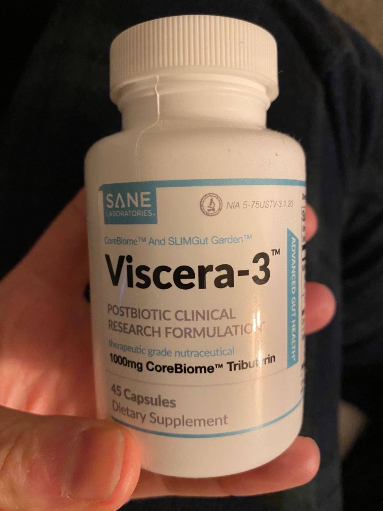

| | 2-minute read
| | 2-minute read

From Exhausted and Frustrated to Energized and Confident… How I Regained My Pre-Pregnancy Body Without Sacrificing My Health or Time with My Baby!
After my second child, I struggled.
Like many new moms, I faced the daunting task of losing the pregnancy weight while juggling the demands of a newborn and a toddler.
My doctor’s advice was always the same: "Eat less and move more."
But with sleepless nights and no time for myself, traditional diet and exercise routines felt impossible.
I was at my wit's end, feeling disconnected from the body I once knew and loved. I couldn’t accept that this was how motherhood had to feel.
Refusing to give up, I scoured the internet for a safer, more practical solution.
That’s when I stumbled upon Dr. Matthew Olesiak M.D., an Ivy League-trained expert who has dedicated years to helping women reclaim their health and vitality, especially post-pregnancy.
That’s When I Met Dr. Matthew Olesiak M.D., an Ivy League-Trained Expert in Women’s Health

Dr. Olesiak has spent the better part of the last decade creating innovative solutions to help women regain their vitality post-pregnancy.
His website was filled with testimonials from women who felt revitalized, claiming he had transformed their lives.
Eager for change, I booked an online consultation with him.
After some initial small talk about motherhood and its challenges, he got straight to the point, explaining something that shocked me:
“Your Body Is Capable of Amazing Recovery, But It Needs the Right Support to Do So”
Dr. Olesiak warned against common over-the-counter weight loss pills.
“They’re like using a band-aid on a leaky faucet,” he said.
Many of these solutions temporarily mask the problem without addressing the underlying issues, leaving mothers feeling frustrated when the weight returns.
Furthermore, these quick fixes can carry risks, especially for breastfeeding moms, ranging from harmful side effects to transmitting unsafe compounds to the baby.
Now, here’s the good news…
If You’re Struggling with Baby Fat… There’s Still Hope!
As long as you support your body correctly, it’s never too late to reverse the unwanted weight gain and regain your energy.
Dr. Olesiak introduced me to a groundbreaking approach that doesn’t just shed pounds but enhances overall health without mundane cardio or restrictive diets.
Introducing the Science of Gut Health for Post-Pregnancy Recovery
The solution isn’t more exercise or stricter diets. It’s about supporting your body’s natural processes.
Dr. Olesiak collaborated with top scientists to develop VISARA 3, a natural supplement specifically designed for post-pregnancy weight loss and energy enhancement.
VISARA 3 contains a blend of natural ingredients that support gut health, boost metabolism, and promote hormonal balance safely and effectively.

This Breakthrough Supplement Can Help You Regain Your Health and Confidence
VISARA 3 utilizes a unique combination of probiotics, postbiotics, and botanical extracts to kickstart your metabolism and support your gut health...
Which in turn helps your body to naturally regain its pre-pregnancy weight.
This means you can finally shed those stubborn pounds and reclaim the energy you need to be the best mom you can be.
Let me be clear. I’ve tried diets, gym memberships, and all sorts of supplements, but nothing was as effective or as easy as VISARA 3.
It doesn’t just work on the surface; it addresses the root cause of post-pregnancy weight gain by restoring the natural balance of your body.
And the best part? It’s easy to integrate into your busy mom-life.
Here’s How To Use VISARA 3 For Best Results
Want me to continue this advertorial?
Send me an email (hello@vanvizovisek.io) and let’s talk! :)